2025

LSHFed: Robust and Communication-Efficient Federated Learning with Locally-Sensitive Hashing Gradient Mapping
Guanjie Cheng, Mengzhen Yang, Xinkui Zhao, Shuyi Yu, Tianyu Du, Yangyang Wu,
Mengying Zhu, Shuigang Deng
AAAI Conference on Artificial Intelligence (AAAI), 2026
Federated learning (FL) enables collaborative model training across distributed nodes without exposing raw data, but its decentralized nature makes it vulnerable in trust-deficient environments. Inference attacks may recover sensitive information from gradient updates, while poisoning attacks can degrade model performance or induce malicious behaviors. Existing defenses often suffer from high communication and computation costs, or limited detection precision. To address these issues, we propose LSHFed, a robust and communication-efficient FL framework that simultaneously enhances aggregation robustness and privacy preservation. At its core, LSHFed incorporates LSHGM, a novel gradient verification mechanism that projects high-dimensional gradients into compact binary representations via multi-hyperplane locally-sensitive hashing. This enables accurate detection and filtering of malicious gradients using only their irreversible hash forms, thus mitigating privacy leakage risks and substantially reducing transmission overhead. Extensive experiments demonstrate that LSHFed maintains high model performance even when up to 50% of participants are collusive adversaries while achieving up to a 1000x reduction in gradient verification communication compared to full-gradient methods.
Keywords:
Federated learning, Robust aggregation, Locally-sensitive hashing, Malicious gradient detection,
Privacy-preserving learning
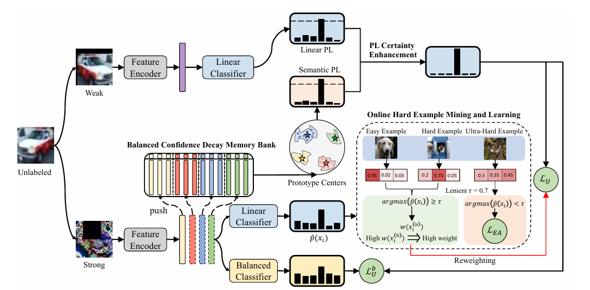
SeMi: When Imbalanced Semi-Supervised Learning Meets Mining Hard Examples
Yin Wang, Zixuan Wang, Hao Lu, Zhen Qin, Hailiang Zhao, Guanjie Cheng, Xin Du, Ge Su, Li Kuang, Mengchu Zhou, Shuiguang Deng
MM '25: Proceedings of the 33rd ACM International Conference on Multimedia (ACM MM), 2025
Semi-Supervised Learning (SSL) can leverage abundant unlabeled data to boost model performance. However, the class-imbalanced data distribution in real-world scenarios poses great challenges to SSL, resulting in performance degradation. Existing class-imbalanced semi-supervised learning (CISSL) methods mainly focus on rebalancing datasets but ignore the potential of using hard examples to enhance performance, making it difficult to fully harness the power of unlabeled data even with sophisticated algorithms. To address this issue, we propose a method that enhances the performance of Imbalanced Semi-Supervised Learning by Mining Hard Examples (SeMi). This method distinguishes the entropy differences among logits of hard and easy examples, thereby identifying hard examples and increasing the utility of unlabeled data, better addressing the imbalance problem in CISSL. In addition, we maintain a class-balanced memory bank with confidence decay for storing high-confidence embeddings to enhance the pseudo-labels' reliability. Although our method is simple, it is effective and seamlessly integrates with existing approaches. We perform comprehensive experiments on standard CISSL benchmarks and experimentally demonstrate that our proposed SeMi outperforms existing state-of-the-art methods on multiple benchmarks, especially in reversed scenarios, where our best result shows approximately a 54.8% improvement over the baseline methods. Our code is available at https://github.com/pywin/SeMi.
Keywords:
Semi-supervised learning, Pseudo-labeling, Class-imbalanced data,
Multimodal support

Secure and Efficient Personalized Multi-Receiver Data Sharing with Cross-Domain Authentication for Internet of Vehicles
Taolong Su, Guanjie Cheng, Junqin Huang, Xinkui Zhao, Shuiguang Deng
IEEE Transactions on Dependable and Secure Computing (TDSC), 2025
The Internet of Vehicles (IoV) has the potential to greatly improve traffic efficiency and road safety through the real-time exchange of data between vehicles and transport infrastructures. While many schemes employ Certificateless Signcryption (CLSC) to ensure data confidentiality and provide authentication in IoV, existing methods are predominantly designed for single-sender/single-receiver or multi-sender/single-receiver configurations. There is a notable gap in the research addressing the personalized sharing of data with multiple specific users. This paper addresses the practical and challenging problem of personalized multi-receiver data sharing, where customized data is sent to each recipient while remaining confidential from others. Furthermore, the dynamic and heterogeneous nature of vehicles introduces significant challenges for authentication across diverse geographic domains. To address these issues, we propose a novel, lightweight personalized multi-receiver CLSC algorithm featuring cross-domain authentication, thereby enhancing its applicability across various IoV scenarios. Our scheme also reduces computational complexity by enabling aggregated unsigncryption. Additionally, we introduce a pseudonym generation mechanism to ensure the anonymity of participants' identities while maintaining traceability. Rigorous formal security analyses demonstrate that our scheme satisfies all specified security requirements. Furthermore, the experimental evaluations confirm the efficiency and practicality of our scheme.
Keywords:
IoV, Multi-receiver data sharing, Certificateless signcryption, Cross-domain authentication, Traceability
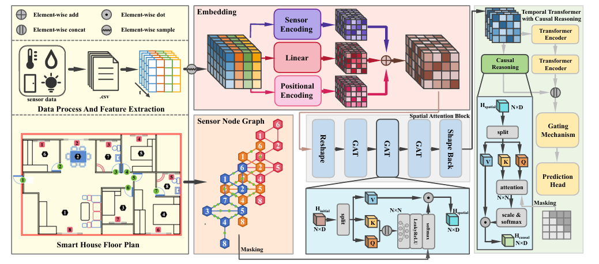
DyC-STG: Dynamic Causal Spatio-Temporal Graph Network for Real-time Data Credibility Analysis in IoT
Guanjie Cheng, Boyi Li, Peihan Wu, Feiyi Chen, Xinkui Zhao, Mengying Zhu, Shuiguang Deng
AAAI Conference on Artificial Intelligence (AAAI), 2026
The wide spreading of Internet of Things (IoT) sensors generates vast spatio-temporal data streams, but ensuring data credibility is a critical yet unsolved challenge for applications like smart homes. While spatio-temporal graph (STG) models are a leading paradigm for such data, they often fall short in dynamic, human-centric environments due to two fundamental limitations: (1) their reliance on static graph topologies, which fail to capture physical, event-driven dynamics, and (2) their tendency to confuse spurious correlations with true causality, undermining robustness in human-centric environments. To address these gaps, we propose the Dynamic Causal Spatio-Temporal Graph Network (DyC-STG), a novel framework designed for real-time data credibility analysis in IoT. Our framework features two synergistic contributions: an event-driven dynamic graph module that adapts the graph topology in real-time to reflect physical state changes, and a causal reasoning module to distill causally-aware representations by strictly enforcing temporal precedence. To facilitate the research in this domain we release two new real-world datasets. Comprehensive experiments show that DyC-STG establishes a new state-of-the-art, outperforming the strongest baselines by 1.4 percentage points and achieving an F1-Score of up to 0.930.
Keywords:
Internet of Things (IoT), Data credibility, Spatio-temporal graph neural networks, Causal reasoning

BPI: A Novel Efficient and Reliable Search Structure for Hybrid Storage Blockchain
Xinkui Zhao, Rengrong Xiong, Guanjie Cheng, Xinhao Jin, Shawn Shi, Xiubo Liang, Gongsheng Yuan, Xiaoye Miao, Jianwei Yin, Shuiguang Deng
ACM SIGMOD Conference (SIGMOD), 2025
Hybrid storage solutions have emerged as potent strategies to alleviate the data storage bottlenecks prevalent in blockchain systems. These solutions harness off-chain Storage Services Providers (SPs) in conjunction with Authenticated Data Structures (ADS) to ensure data integrity and accuracy. Despite these advancements, the reliance on centralized SPs raises concerns about query correctness. Although ADS can verify the existence of individual query results, they fall short of preventing SPs from omitting valid results.
In this paper, we delineate the fundamental distinctions between data search in blockchains and traditional database systems. Drawing upon these insights, we introduce BPI, a lightweight framework that enables efficient keyword queries and maintenance with low overhead. We propose "Articulated Search", a query pattern specifically designed for blockchain environments that enhances search efficiency while significantly reducing costs during data user updates. Furthermore, BPI employs a suite of validation models to ensure the inclusion of all valid content in search results while maintaining low overhead.
Extensive experimental evaluations demonstrate that the BPI framework achieves outstanding scalability and performance in keyword searches within blockchain, surpassing EthMB+ and state of the art search databases commonly used in mainstream hybrid storage blockchains (HSB).
Keywords:
Blockchain, Data storage, Articulated Search, Integrity verification
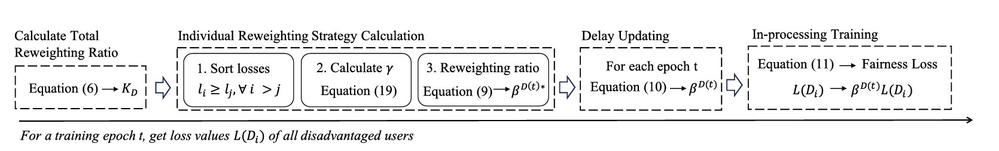
Towards Fairness Exploration and Optimization for Digital Service Networks
Zhongxuan Han, Li Zhang, Chaochao Chen, Xiaolin Zheng, Yuyuan Li, Shuiguang Deng, Guanjie Cheng, Schahram Dustdar
IEEE Transactions on Services Computing (TSC), 2025
Digital service networks often face the challenge of Service-Oriented Fairness (SOF), where service nodes with varying levels of activity may receive unequal treatment. This article takes the recommendation service system as a representative case to explore and mitigate the impact of SOF. The SOF issue in the recommendation service system can be abstracted as User-Oriented Fairness (UOF), where service models often exhibit bias toward a small group of users, resulting in significant unfairness in the quality of recommendations. Existing research on UOF faces three major limitations, and no single approach effectively addresses all of them. Limitation 1: Post-processing methods fail to address the root cause of the UOF issue. Limitation 2: Some in-processing methods rely heavily on unstable user similarity calculations under severe data sparsity problems. Limitation 3: Other in-processing methods overlook the disparate treatment of individual users within user groups. In this article, we propose a novel Individual Reweighting for User-Oriented Fairness framework, namely IR-UOF, to address all the aforementioned limitations. The motivation behind IR-UOF is to introduce an in-processing strategy that addresses the UOF issue at the individual level without the need to explore user similarities. We first conduct extensive experiments on three real-world recommendation service datasets using four backbone recommendation models to demonstrate the effectiveness of IR-UOF in mitigating UOF and improving recommendation fairness. Furthermore, we select two general digital service datasets to prove that IR-UOF can be extended to tackle the general SOF issue in other types of digital service networks. In summary, the IR-UOF framework achieves optimal model performance across all datasets, while improving fairness by at least 3.8% in recommendation systems and 24.7% in general service systems.
Keywords:
Digital service network, Recommender systems, Fairness, Individual reweighting
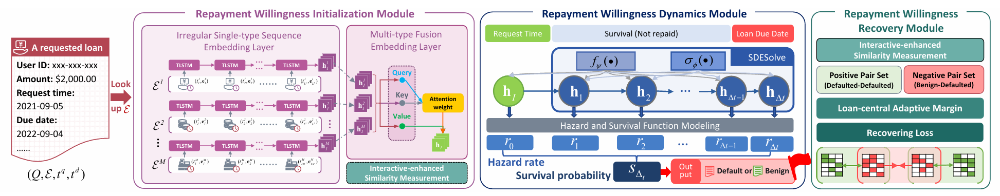
D3: Delayed Default-Intention Based Default Prediction in Financial Loan Service
Mengying Zhu, Mengyuan Yang, Guanjie Cheng, Guofang Ma
IEEE International Conference on Web Services (ICWS), 2025
Loan default prediction is a crucial component of risk management in financial loan services. In practice, significant monetary losses often stem from initially creditworthy loans that later default unexpectedly. This phenomenon arises because such loans, while assessed as low-risk at disbursement initially, have a high default-intention to arise, in a delayed manner, at an indeterminate time during the repayment period after disbursement. We term such default-intention as Delayed Defaultintention. In this paper, we present a new and pressing task, namely, Delayed Default-intention based Default prediction (D3), which is of practical significance but has been rarely studied in prior research. The core challenge of D3 task lies in its farsighted inference of delayed default-intention, as it does not manifest immediately after disbursement. To address this, we propose a survival analysis framework for the D3 task and a novel RW-D3 method, which models the repayment willingness (RW) in a loan as a negatively correlated alternative to delayed default-intention. RW-D3 systematically initializes, dynamizes, and recovers the original RW representations based on user behavior sequences, enhancing their predictive capacity from a short-term to a long-term perspective. Additionally, RW-D3 provides a comprehensive prediction of defaults triggered by delayed default-intention by jointly considering repayment status and timing. Extensive experiments demonstrate the superiority of RW-D3 over state-of-the-art methods in both its predictive effectiveness and explainability in financial loan services.
Keywords:
Service Application, Financial Loan Service, Default Prediction, Survival Analysis
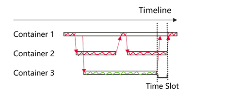
Slackness-Driven Microservice Deployment Across Geo-Distributed Clouds: Workflow-Aware Scheduling for End-to-End QoS Assurance
Yingying Wen, Guanjie Cheng
IEEE International Conference on Quantum Software (QSW), 2025
Microservice architectures are pivotal for geodistributed cloud applications, yet the scheduling of interdependent components poses a dual challenge: balancing resource cost and end-to-end latency while managing workflow complexity. Existing approaches predominantly focus on critical paths, leaving slackness in non-critical paths as an underexplored optimization opportunity. This paper proposes NIWA, a slackness-driven scheduling framework that quantifies the performance tolerance of microservice components from an end-to-end QoS perspective. By dynamically analyzing workflow dependencies and latency slackness, NIWA enables three core capabilities: 1) Cost-efficient deployment: Identifying components with excessive performance margins and relocating them to cost-effective regions without violating latency requirements. 2) Anomaly mitigation: Detecting slackness anomalies as early warnings for potential QoS violations and localizing root causes. 3) SLO decomposition: Translating end-to-end latency targets into component-level slackness thresholds for automated orchestration. Dual validation demonstrates NIWA's efficacy: 1) Simulation accuracy: 98.89% slackness quantification across 1,000 workflows (20.4 components avg.) with zero error overflow; 2) Production readiness: Proven in DeathStarBench applications (Social Network, Hotel Reservation) under cross-region deployments.
Keywords:
Microservice Workflow, Critical Path Analysis, Geo-Aware Deployment, SLO Setting

Online Workload Scheduling for Social Welfare Maximization in the Computing Continuum
Hailiang Zhao, Ziqi Wang, Guanjie Cheng, Wenzhuo Qian, Peng Chen, Jianwei Yin, Schahram Dustdar, Shuiguang Deng
IEEE Transactions on Services Computing (TSC), 2025
Computing ecosystems are shifting toward a computing continuum paradigm designed to handle the diverse and dynamic nature of computing resources spread across various locations. It demonstrates significant potential in providing high-bandwidth and low-latency services for users. However, as a large number of users request services from distributed computing continuum systems, it is critical to schedule numerous delay-sensitive, fractional workloads and maximum parallelism-bound jobs to appropriate backend resources, e.g., cloud container instances. In addition, the scheduling strategy also needs to maximize the social welfare that incorporates the utilities of jobs and the revenue of service providers. However, current workload scheduling algorithms are based on simple heuristics and lack performance guarantees. Due to the unpredictability of online requests, the distribution of requests should not be assumed. Therefore, designing an online workload scheduling strategy without assumptions on request distributions is essential for balancing the online workload. This work first establishes a spatiotemporal integrated resource pool to reflect the computational resources provided by distributed computing continuum systems. Then, several pseudo-social welfare functions and marginal cost functions are constructed, where the latter is used to estimate the marginal cost of provisioning services to each newly arrived job based on the current resource surplus. We propose an online workload scheduling strategy named OnSocMax to solve the above problems. It operates by following the solutions to several convex pseudo-social welfare maximization problems and is proven to be α-competitive for some α with a value of at least 2. The evaluation results demonstrate that OnSocMax outperforms several benchmark strategies in maximizing social welfare.
Keywords:
Computing continuum, Mobile edge computing, Load balancing, Social welfare maximization, Online workload scheduling
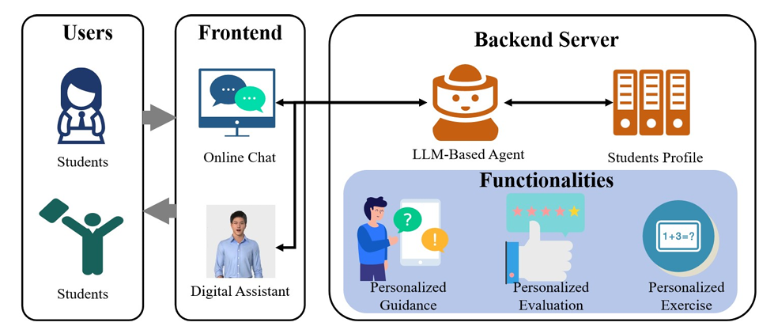
SortingHat: Redefining Operating Systems Education with a Tailored Digital Teaching Assistant
Yifan Zhang, Xinkui Zhao, Zuxin Wang, Zhengyi Zhou, Guanjie Cheng, Shuiguang Deng, Jianwei Yin
Companion Proceedings of the ACM on Web Conference (WWW), 2025
Operating Systems (OS) courses are among the most challenging in computer science education due to the complexity of internal structures and the diversity of running environments. Traditional teaching methods often fail to address the diverse backgrounds, learning speeds, and practical needs of students. To tackle these challenges, we present SortingHat, a personalized digital teaching assistant tailored specifically for OS education. SortingHat integrates advanced AI technologies, including a retrieval-augmented generation (RAG) framework and multi-agent reinforcement learning (MARL), to deliver adaptive, scalable, and effective educational support. SortingHat features a 3D digital human interface powered by large language models (LLMs) to provide personalized, empathetic, and context-aware guidance. It generates tailored exercises based on each student's learning history and academic performance, reinforcing weak areas and challenging advanced concepts. Additionally, the system incorporates a robust evaluation pipeline that ensures fair, consistent, and unbiased grading of student submissions while delivering personalized, actionable feedback for improvement. By combining personalized guidance, adaptive content creation, and automated assessment, SortingHat transforms OS education into an engaging, immersive, and scalable experience.
Keywords:
Education, Large Language models, Digital Human, Retrieval Augmented GenerationMulti Agent Reinforcement Learning
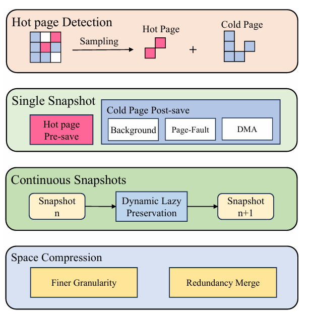
HeatSnap: A Hot Page-Aware Continuous Snapshots System for Virtual Machines in Web Infrastructure
Kangyue Gao, Chuangyu Ouyang, Xinkui Zhao, Miao Ye, Chen Zhi, Guanjie Cheng, Yueshen Xu, Shuiguang Deng, Jianwei Yin
Companion Proceedings of the ACM on Web Conference (WWW), 2025
Snapshot technology is crucial for data protection and system recovery in virtualized environments, particularly with the growing need for continuous snapshots to maintain the integrity of long-running web-based and distributed applications. However, traditional snapshot methods often suffer from performance bottlenecks, and inefficient storage usage. These challenges are closely tied to the way memory pages are accessed during VM execution, where memory access patterns show significant disparities between frequently accessed "hot" pages and less-used "cold" pages. In this paper, we introduce HeatSnap, a continuous snapshot system designed to address these issues by leveraging the uneven access frequencies of memory pages. HeatSnap distinguishes between intensive hot pages and dirty pages, applying specialized snapshotting and storage strategies to optimize the handling of both hot and cold memory regions. This approach aims to optimize snapshot efficiency, minimize performance impact on the VM, and decrease storage costs. Our implementation of HeatSnap on QEMU/KVM demonstrates significant improvements in VM performance loss, snapshot duration, and storage efficiency compared to existing methods, as evidenced by evaluations on common web and cloud-based workloads.
Keywords:
Virtual machine snapshots, Continuous snapshots, Hot page detection
2024
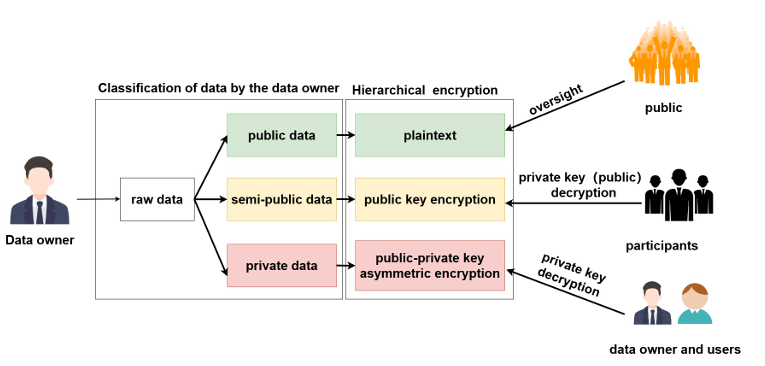
EE blockchain: End-to-end service regulation and efficient retrieval and categorization on the underlying level
Rengrong Xiong, Guanjie Cheng, DianKai Hu, Yueshen Xu, XiuBo Liang, Xinkui Zhao
IEEE International Conference on Web Services (ICWS), 2024
In large-scale digital service sharing scenarios, given the large number of participating users, frequent cross-domain service interactions, and high-frequency service transactions, to ensure the trustworthiness of digital services, the architecture of the digital service sharing system usually chooses blockchain as its technological foundation. This not only ensures the security and credible deposit of data, but also achieves the credible traceability of data. However, in the current blockchain-based notarization architecture, there may be potential privacy leakage during data transmission, and users are unable to choose the encryption level of their data for blockchain deposition according to their own needs. Moreover, the underlying databases in current applications using blockchain lack convenient retrieval and categorization functionalities. In this work, we propose a trustworthy blockchain solution based on permission management, which implements hierarchical encryption and enables users to flexibly encrypt data according to their needs. Additionally, through the Double Star storage system, while ensuring the reliability of the system, we have also greatly improved the efficiency of data retrieval and classification. Compared to blockchain platforms like XRP and EOS, our solution achieves superior data retrieval and classification efficiency while implementing layered encryption.
Keywords:
Hierarchical encryption, Blockchain storage, Double star system, Asymmetric encryption, Privacy protection
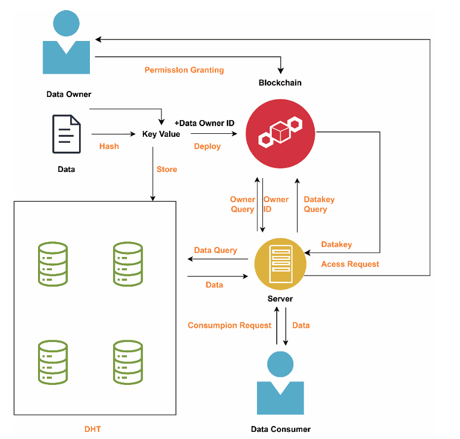
Scenarios analysis and performance assessment of blockchain integrated in 6G scenarios
Bo Li, Guanjie Cheng, Honghao Gao, Xueqiang Yan, Shuiguang Deng
Science China Information Sciences, 2024
Emerging applications such as smart city infrastructures and virtual reality landscapes are setting rigorous benchmarks for 6G mobile networks, requiring elevated levels of confidentiality, integrity, non-repudiation, authentication, and stringent access controls. Blockchain technology is heralded as a transformative enabler for meeting 6G standards, owing to its intrinsic attributes. However, a gap exists in the holistic investigation of blockchain’s applicability in 6G realms, particularly addressing the “whether”, “when”, and “how” of its deployment. Present research trails in developing robust methodologies to gauge blockchain’s efficacy within 6G use cases. Addressing this, our study introduces a novel confluence of blockchain with 6G networks, where data resides in distributed Hash tables (DHTs) while their hashes are secured in distributed ledger technology (DLT), harnessing blockchain’s core strengths-immutability, traceability, and fortified security. We delineate seven specific 6G use cases poised for enhancement through blockchain integration, and scrutinize the rationale, nature, and timing of this convergence. Furthermore, we devise a comprehensive methodology for assessing blockchain’s performance metrics and scalability in 6G environments. Our extensive experimental analyses evaluate the synergistic performance of this integration, revealing that the Quorum blockchain satisfactorily supports 80% of 6G scenarios. The findings suggest that, with appropriate configurations, consortium blockchains are well-equipped to fulfill the demanding performance and scalability requisites of 6G networks.
Keywords:
Blockchain, Distributed ledger technology (DLT), 6G, Performance assessment, 6G scenarios analysis, Transaction arrival rate
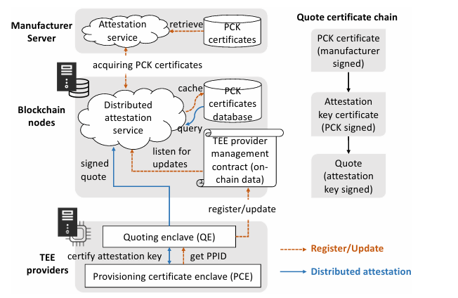
Advancing Web 3.0: Making Smart Contracts Smarter on Blockchain
Junqin Huang, Linghe Kong, Guanjie Cheng, Qiao Xiang, Guihai Chen, Gang Huang, Xue Liu
Proceedings of the ACM Web Conference (WWW), 2024
Blockchain and smart contracts are one of the key technologies promoting Web 3.0. However, due to security considerations and consistency requirements, smart contracts currently only support simple and deterministic programs, which significantly hinders their deployment in intelligent Web 3.0 applications. To enhance smart contracts intelligence on the blockchain, we propose SMART, a plug-in smart contract framework that supports efficient AI model inference while being compatible with existing blockchains. To handle the high complexity of model inference, we propose an on-chain and off-chain joint execution model, which separates the SMART contract into two parts: the deterministic code still runs inside an on-chain virtual machine, while the complex model inference is offloaded to off-chain compute nodes. To solve the non-determinism brought by model inference, we leverage Trusted Execution Environments (TEEs) to endorse the integrity and correctness of the off-chain execution. We also design distributed attestation and secret key provisioning schemes to further enhance the system security and model privacy. We implement a SMART prototype and evaluate it on a popular Ethereum Virtual Machine (EVM)-based blockchain. Theoretical analysis and prototype evaluation show that SMART not only achieves the security goals of correctness, liveness, and model privacy, but also has approximately 5 orders of magnitude faster inference efficiency than existing on-chain solutions.
Keywords:
Web 3.0, Smart contract, Blockchain, Model inference, Trusted execution environment
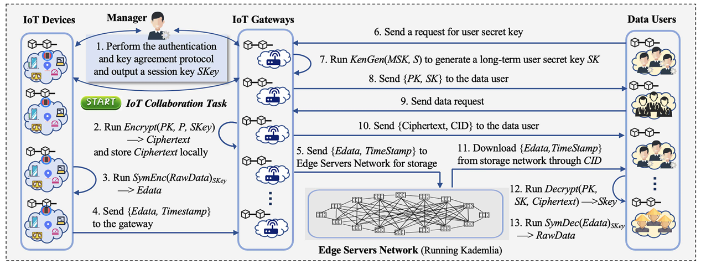
A Lightweight Authentication-Driven Trusted Management Framework for IoT Collaboration
Guanjie Cheng, Yewei Wang, Shuiguang Deng, Zhengzhe Xiang, Xueqiang Yan, Peng Zhao, Schahram Dustdar
IEEE Transactions on Services Computing (TSC), 2024
The property of Internet of Things (IoT) applications is their capability to execute tasks through the collaboration of interconnected IoT objects. However, IoT collaborations face significant challenges due to security threats that undermine their reliability. An uncertified task publisher may deceive IoT devices into executing illegal tasks, while malicious attackers may intercept and modify transmitted data. Existing works on IoT trusted management issues tend to concentrate on individual aspects, such as authentication, privacy protection, and access control. However, trusted management for IoT collaboration is a multifaceted and intricate endeavor that necessitates a comprehensive approach. To fill this gap, we propose a lightweight authentication-driven trusted management framework that includes a novel authentication and key agreement scheme to guarantee the validity of task publishers, with greatly reduced overheads compared to recent works. The framework also incorporates a distributed data storage scheme and a fine-grained access control mechanism. We record the interactive messages on the blockchain to ensure behavior traceability. We evaluate the authentication scheme through comparative experiments and formal security analysis, demonstrating its efficiency and effectiveness. The experimental results of data storage and acquisition in real-world IoT environments indicate that the proposed framework is a feasible solution for reliable IoT collaboration.
Keywords:
Access control, Data storage, IoT collaboration, Lightweight authentication, Trusted management
2023
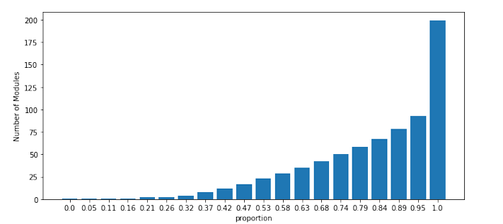
Module-Based Approach for Detecting Performance Bugs in Java Applications at Scale
Yingying Wen, Guanjie Cheng
49th Annual Conference of the IEEE Industrial Electronics Society (IECON), 2023
Hundreds of thousands of Java applications have been deployed in data centers at our production Cloud to support burst peak traffic. However, detecting performance bugs in Java can be difficult as they may not prevent the applications from running correctly, and may not even manifest at low loads. Profiling data collected from production provides insight into the actual running states of applications. In this paper, we aim to identify hot spots for further performance debugging by analyzing profiling data from tens of thousands of machines in the data center using a module-based approach. We present our practical experience with module classification, which allows for filtering of out-of-range modules and long-duration modules of high utilization. Our study proposes a heuristic solution to detect performance bugs in Java at scale.
Keywords:
Performance tuning, Production environment debug, Hot spot detection
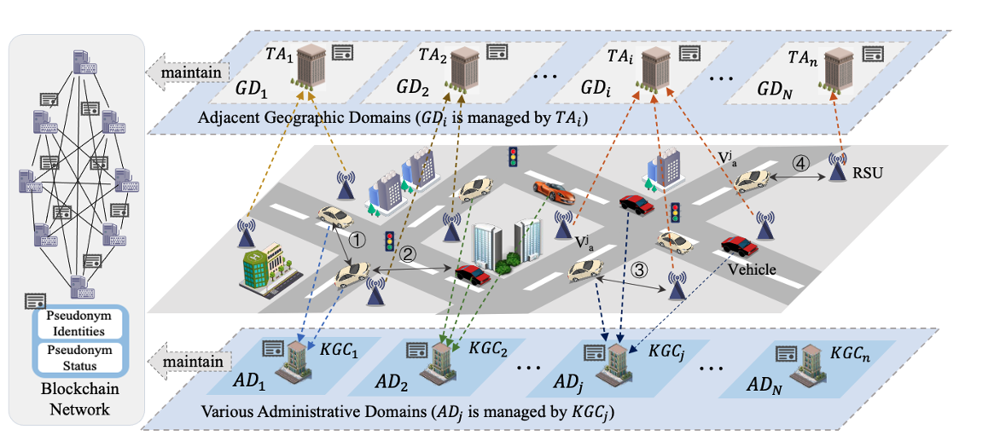
Conditional Privacy-Preserving Multi-Domain Authentication and Pseudonym Management for 6G-Enabled IoV
Guanjie Cheng, Junqin Huang, Yewei Wang, Jun Zhao, Linghe Kong, Shuiguang Deng, Xueqiang Yan
IEEE Transactions on Information Forensics and Security (TIFS), 2023
With the emergence of the sixth-generation (6G) communication technologies, the Internet of Vehicles (IoV) is rapidly developing with the coordination between intelligent networked vehicles, road infrastructures, and the cloud. However, the openness and dynamic nature of the IoV raise significant security and privacy concerns, highlighting the need for efficient authentication schemes. Conventional authentication schemes are no longer suitable for 6G-enabled IoV due to high latency, single point of failure, and heavy management costs. Additionally, existing literature on multi-domain authentication mainly investigates vehicle mobility, ignoring the challenges posed by vehicle heterogeneity. To fill this gap, we propose a multi-domain authentication scheme with conditional privacy preservation (MACPP) that considers administrative domains (AD) and geographic domains (GD) in the IoV. In MACPP, we design a novel identity-based signature scheme without requiring bilinear pairing for efficient authentication. Additionally, we propose a blockchain-assisted pseudonym management scheme (BAPM) to further improve system security by designing a dynamical sparse Merkle tree structure (DSMT). We demonstrate that the proposed MACPP satisfies the security requirements through an in-depth security analysis. Moreover, the experimental results demonstrate the effectiveness and efficiency of both MACPP and BAPM.
Keywords:
Internet of Vehicles, Authentication, Conditional privacy preservation, Identity-based signature, Pseudonym management, Merkle tree
2022
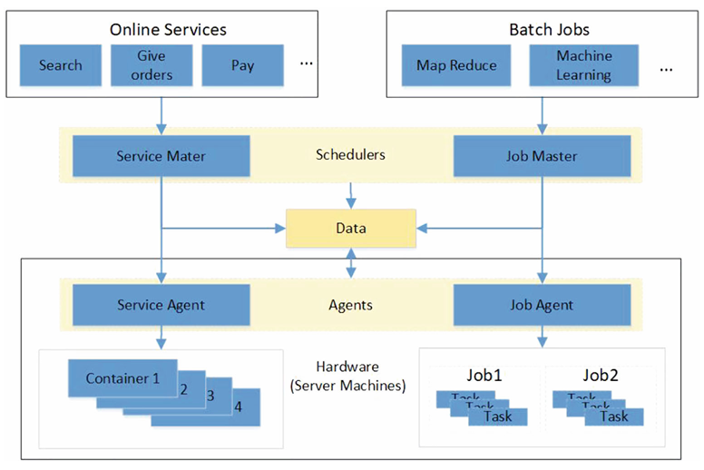
A holistic evaluation methodology for configuring production data centers
Yingying Wen, Yiming Zhang, Guanjie Cheng, Shuiguang Deng, Jianwei Yin
Concurrency and Computation: Practice and Experience, 2022
Performance evaluation is the basis for choosing appropriate system-level configurations for large-scale data centers. While the change of a system-level configuration would impact lots of jobs in the data centers, traditional load-testing benchmarks are not sufficient to support the decision-making because they cannot accurately reproduce the complex behaviors of a large number of jobs. Therefore, we expect to further evaluate the system configuration based on the production environment. However, there are technical challenges, namely, the lack of a holistic evaluation method that can unite the evaluation results of various jobs, and the uninterruptable production environment that should not be affected by the evaluation procedure. To address these challenges, we propose a holistic performance evaluation methodology and design its implementation platform. We introduce a simple but powerful performance metric, ERU (effectiveness of resource usage), and combine the ERU of involved jobs into a summarized value to measure the effect of a configuration change. We validate our ERU metric by comparing it with the CPI (Cycle per Instruction) and QPS (query per second) metrics, deploy the platform to production data centers and demonstrate the effectiveness for measuring system-level configurations of both software (JVM compiler update) and hardware (NUMA on/off) to save 14.44% and 11% resources respectively in advance.
Keywords:
Effectiveness of resource usage, Holistic performance evaluation, Performance evaluation platform, System-wide configuration
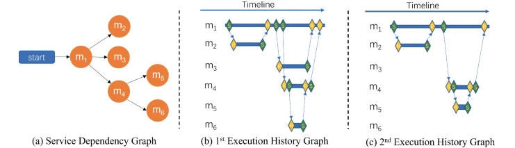
Microservice Workflow Modeling for Affinity Scheduling to Improve the QoS
Yingying Wen, Guanjie Cheng, ShuiGuang Deng, Jianwei Yin
Asia-Pacific Web (APWeb) and Web-Age Information Management (WAIM) Joint International Conference on Web and Big Data, 2022
Attracted by the flexibility of microservice architecture, many Cloud services are composed of components that communicate with the Remote Procedure Calls (RPC). Considering the high cost of RPC between components running on different machines, this raises a question about how to effectively arrange and place these components to physical machines in Cloud to offer good quality of services. Current co-location strategies mainly consider the resource constraints and performance interference among individual components but ignore the workflow dependencies of components. Though workflow of background jobs has been used as an important modeling element when seeking optimal scheduling schema, the workflow-aware scheduling for microservice applications lacks research efforts. In this paper, we propose a workflow-aware component placement schema for microservice applications to reduce their running time. Specifically, we design a new workflow model based on Directed Acyclic Graph (DAG) and probabilistic theory describing components’ calling and time dependency to predict the running time of applications. Based on the proposed model, we quantify the affinity degree of two components that further supports the pod affinity scheduling. The affinity degree considers multiple dimensions, including the critical path, the possible improvement of running time, and the throughput of user requests. The experimental evaluation results prove the accuracy of the workflow model and its application effect on pod affinity scheduling.
Keywords:
Business Process Management, Computing Milieux, Enterprise Architecture, Production, Production Processes
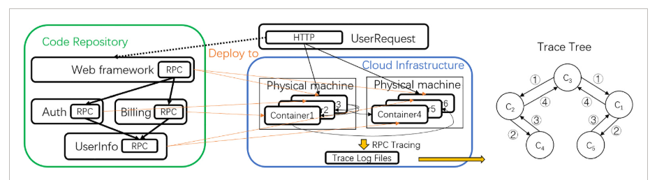
Characterizing and synthesizing the workflow structure of microservices in ByteDance Cloud
Yingying Wen, Guanjie Cheng, Shuiguang Deng, Jianwei Yin
Journal of Software: Evolution and Process, 2022
Modern Cloud applications have evolved from monolithic systems to numerous distributed microservices whose workflows interact via Remote Procedure Calls (RPCs). The benchmarks focusing on individual microservice components are insufficient because the reference relationships between components, which form the microservice workflow structure, are another critical aspect of microservice applications. Unfortunately, understanding the characteristics of microservice workflow in the production Cloud remains a missing piece in the literature, which prevents the representative of microservice benchmarks. In this paper, we fill this gap by characterizing and synthesizing the microservice workflows based on the trace data of the Toutiao application that is running on ByteDance Cloud. We examine the microservice workflows starting from DAG graphs, introduce observed properties that are easy to ignore but important, show the artificiality of the workflow by statistic description, and explore the high cost of network overhead. We further synthesize the workflow following the characteristics observed. The extensive evaluations show that the synthesized microservice workflows have consistent statistical characteristics as the production ones. A case study applying the synthesized workflows proves its usability.
Keywords:
ByteDance Cloud, Microservice architecture, Production data characterization, Trace dataanalysis
2021

A Blockchain-Based Mutual Authentication Scheme for Collaborative Edge Computing
Guanjie Cheng, Yan Chen, Shuiguang Deng, Honghao Gao, Jianwei Yin
IEEE Transactions on Computational Social Systems (TCSS), 2021
With the ever-increasing requirements of delay-sensitive and mission-critical applications, it becomes a popular research trend to incorporate edge computing in the Internet of Things (IoT) to mitigate the pressure of traditional cloud-based IoT architecture. Edge computing delivers real-time computations and communications for IoT devices by leveraging edge servers deployed close to users, which creates a collaborative edge computing (CEC) paradigm. The capacity of edge servers is beneficial but risky, as vulnerable servers can be exploited to conduct surveillance or perform other nefarious activities. Besides, fake IoT devices would bring security threats and compromise the IoT system. This highlights the necessity of designing a secure and efficient mutual authentication scheme for CEC. In this direction, related works have proposed various authentication mechanisms, but most of them are found unfit due to the absence of decentralization, anonymity, and mobility. Motivated by this fact, we propose a blockchain-based mutual authentication scheme that bridges these gaps. Specifically, blockchain, certificateless cryptography, elliptic curve cryptography, and pseudonym-based cryptography are integrated into our scheme to provide mutual authentication between edge servers and IoT devices. Except for static conditions, both intraedge and interedge authentication are considered. Besides, we elaborate on the key generation procedures and design a session key negotiation mechanism. Extensive experiments and security analyses have been conducted to show the feasibility of the proposed scheme.
Keywords:
Blockchain, Cross-domain authentication, Edge computing, Internet of Things (IoT), Mutual authentication.
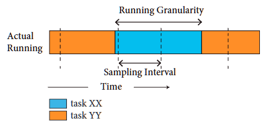
Probability Analysis to Improve the Confidence in Profiling Accuracy
Yingying Wen, Guanjie Cheng, Bo Lin, Jianwei Yin
Mathematical Problems in Engineering, 2021
Performance profiling for the system is necessary and has already been widely supported by hardware performance counters (HPC). HPC is based on the registers to count the number of events in a time interval and uses system interruption to read the number from registers to a recording file. The profiled result approximates the actual running states and is not accurate since the profiling technique uses sampling to capture the states. We do not know the actual running states before, which makes the validation on profiling results complex. Jianwei YinSome experiments-based analysis compared the running results of benchmarks running on different systems to improve the confidence of the profiling technique. But they have not explained why the sampling technique can represent the actual running states. We use the probability theory to prove that the expectation value of events profiled is an unbiased estimation of the actual states, and its variance is small enough. For knowing the actual running states, we design a simulation to generate the running states and get the profiled results. We refer to the applications running on production data centers to choose the parameters for our simulation settings. Comparing the actual running states and the profiled results shows they are similar, which proves our probability analysis is correct and improves our confidence in profiling accuracy.
2020
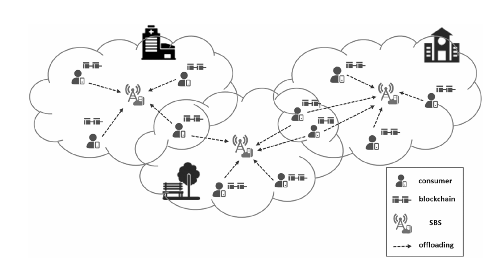
Incentive-driven computation offloading in blockchain-enabled E-commerce
Shuiguang Deng, Guanjie Cheng, Hailiang Zhao, Honghao Gao, Jianwei Yin
ACM Transactions on Internet Technology (TOIT), 2020
Blockchain is regarded as one of the most promising technologies to upgrade e-commerce. This article analyzes the challenges that current e-commerce is facing and introduces a new scenario of e-commerce enabled by blockchain. A framework is proposed for mining tasks in this scenario offloaded onto edge servers based on mobile edge computing. Then, the offloading issue is modeled as a multi-constrained optimization problem, and evolutionary algorithms are utilized and re-designed as solvers. The experimental results validate the efficiency of the framework and algorithms and also show that the lower bound of computation resources exists to obtain the maximum overall revenue.
Keywords:
Blockchain, E-commerce, Computation offloading, Edge computing
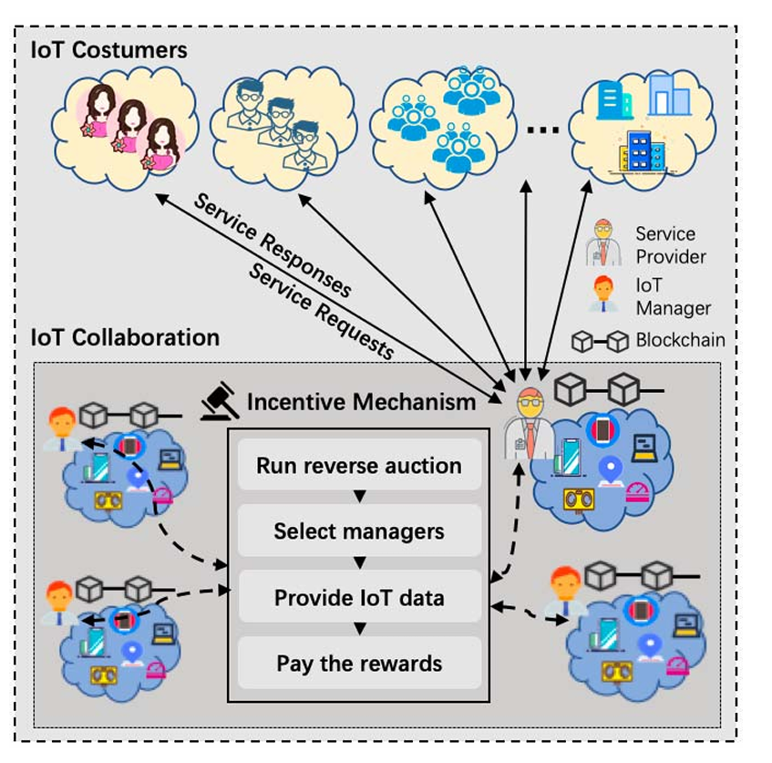
An Auction-Based Incentive Mechanism with Blockchain for IoT Collaboration
Guanjie Cheng, Shuiguang Deng, Zhengzhe Xiang, Yan Chen, Jianwei Yin
IEEE International Conference on Web Services (ICWS), 2020
The prosperous development of IoT has created tremendous opportunities to improve people's lives. Essentially, the core property of the IoT applications is the ability to perform collaborative tasks with data supplied by separate IoT managers. However, the fulfillment of collaborative tasks is driven by the participations of the IoT managers. Generally, the willingness can be activated with appropriate profit (or incentive cost). Thus, an efficient incentive mechanism is needed to motivate the IoT managers to participate in the collaboration. In this paper, we present a reverse auction-based incentive mechanism with the goal of minimizing and stabilizing incentive costs while maintaining adequate participants. To prevent the incentive cost explosion, a droppers recruiting scheme is leveraged to attract the inactive participants. A price verification strategy is designed to avoid bid cheating. Furthermore, we introduce blockchain to orchestrate the interactions between collaborative parties, so as to protect their privacy. Finally, we show the feasibility and efficiency of our proposed framework with simulation experiments and theoretical analysis.
Keywords:
Internet of Things (IoT), Incentive mechanism, Blockchain, Smart contracts, Auction mechanism
Last updated: Nov 2025